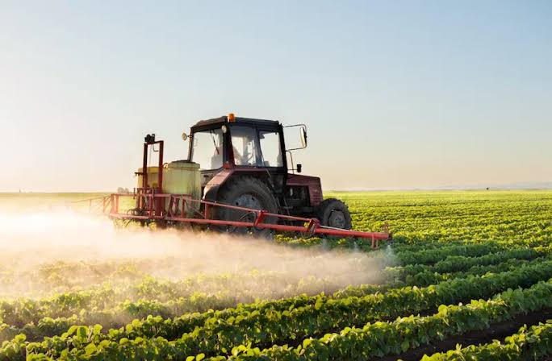

Smart Greenhouse Microclimates
Tips on configuring humidity sensors to maximize tomato growth speed and health indicators...
Read Article


At STACKLY, we bridge the gap between traditional agricultural expertise and modern technological breakthroughs. Our team of agronomists, software engineers, and environmental scientists work hand-in-hand to redefine food security and farm productivity.
From custom micro-climate monitoring algorithms to drone telemetry analytics, we provide an all-inclusive toolkit that drives sustainable yields and optimizes raw resources.
Our LegacyClimate change, resource scarcity, and soaring market demands call for smarter operations. STACKLY Agri solutions empower modern farms to increase operational speed, maximize field profitability, and maintain environmental balance.
Minimize wastage by using analytics that specify target fertilization metrics for individual sectors.
Protect harvests against extreme localized weather anomalies with early response alarms.
We leverage automated devices, connected nodes, and satellite feeds to monitor crops in real-time, reducing resource inputs while boosting efficiency.
Track plant vitality and biomass distribution using high-frequency orbital imagery datasets.
IoT valves that water soil sections only when moisture percentages drop below a specific target.
Instantly flag crop diseases and pest infestations through simple phone-captured photos.
From initial soil checks to ultimate supply distribution, we offer state-of-the-art agricultural workflows tailored to your needs.

PopularComprehensive laboratory assays verifying nitrogen, phosphorus, pH balance, and organic content indicators.
Learn MoreAutomated weather-integrated drip grids that reduce overall water consumption by up to 40%.
Learn More New
New
Continuous multispectral field scanning drones tracking growth performance metrics and weed spread.
Learn MoreWe build systems that respect environmental safety. By using target diagnostic systems, we reduce the chemical impact on groundwater and reduce tractor fuel footprints.
Our integrated systems deliver visual notifications and actions straight to farmer phones.
Deploy low-power field sensors with up to 10-mile reception ranges reporting direct telemetry.
Hyper-local weather warnings checking atmospheric pressures to predict frost occurrences.
Integrate GPS auto-steering modules to tractor drives, reducing operator fatigue and overlaps.
See how STACKLY precision applications changed farming operations globally.
Silva Farms, located in Mendoza, faced dry droughts and rising pest threats. After incorporating STACKLY's smart irrigation and pest diagnosis services, the family cut water spending by 35% and increased vineyard harvest yields by a record 24%.
"STACKLY dashboards felt easy to use right away. We now know the exact conditions of our vines without leaving the farmhouse." — Carlos Silva, Chief VintnerRead More Stories
We combine deep domain agricultural knowledge with modern IoT engineering to provide unmatched performance indicators.
All data telemetry is encrypted from farm devices directly to our cloud infrastructure.
Consult with certified regional agricultural specialists on critical crop issues at any time.
Read reviews from family farm operators and agribusiness corporate leaders alike.
"STACKLY soil analysis reports completely changed our crop selection strategy. We've increased soy yields by 20% in just one season. The precision mapping is remarkably accurate!"

"The automated irrigation system runs flawlessly. It integrates with real-time weather feeds, which prevented overwatering during our heavy rainy seasons. Simply fantastic."

Read reports and guides written by our senior agronomists.

Tips on configuring humidity sensors to maximize tomato growth speed and health indicators...
Read ArticleConfiguring low pressure pipe systems to prevent blockages from mineral and calcium deposits...
Read Article
Utilizing organic crop rotations to safely build topsoil nutrients without excessive chemical uses...
Read Article